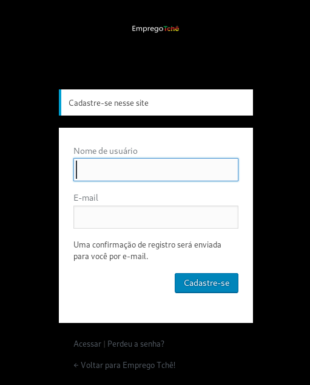
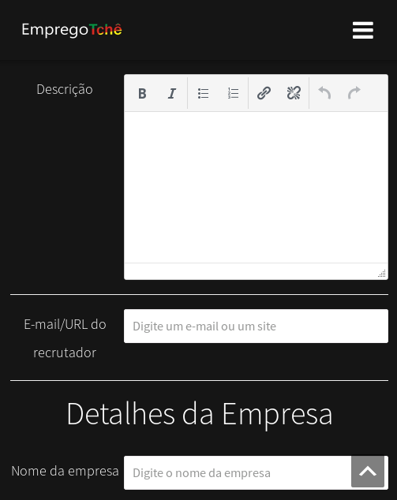

Manual do usuario
Sumario
1. Colaborador
Secao destinada a area de usuarios colaboradores. Aqueles irao cadastrar seu curriculo.
1.1. Cadastro de usuario
Primeiro deve se clicar em menu->login. Como mostra a figura abaixo:
Apos isso, clica em cadastra-se na tela de login, como mostra a figura abaixo:
Deve preencher Nome de usuario e e-mail, conforme figura abaixo:

Apos isso sera enviado um e-mail para confirmacao e cadastro de senha.
1.2. Cadastro de currículo
Em desenvolvimento
2. Empregador
Area destinada a funcionalidades dos usuarios do tipo empregador.
2.1. Cadastro de usuario
Primeiro deve se clicar em menu->login. Como mostra a figura abaixo:
Apos isso, clica em cadastra-se na tela de login, como mostra a figura abaixo:
Deve preencher Nome de usuario e e-mail, conforme figura abaixo:
Apos isso sera enviado um e-mail para confirmacao e cadastro de senha.
2.3. Publicar vaga
Deve-se clicar em "inserir vaga", conforme figura abaixo:
Apos isso deve-se preencher todos os dados das telas abaixo:

3. Instalacao e configuracoes gerais
Primeiramente os dois arquivos(installer.php e xxxx.zip) devem ser colocados na pasta raiz do apache.